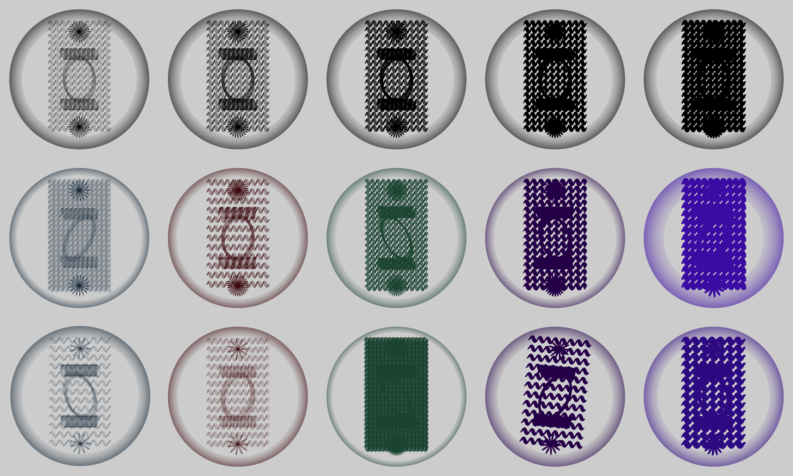
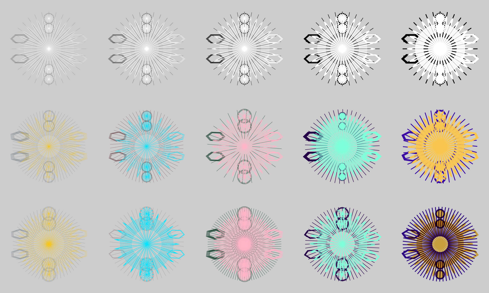
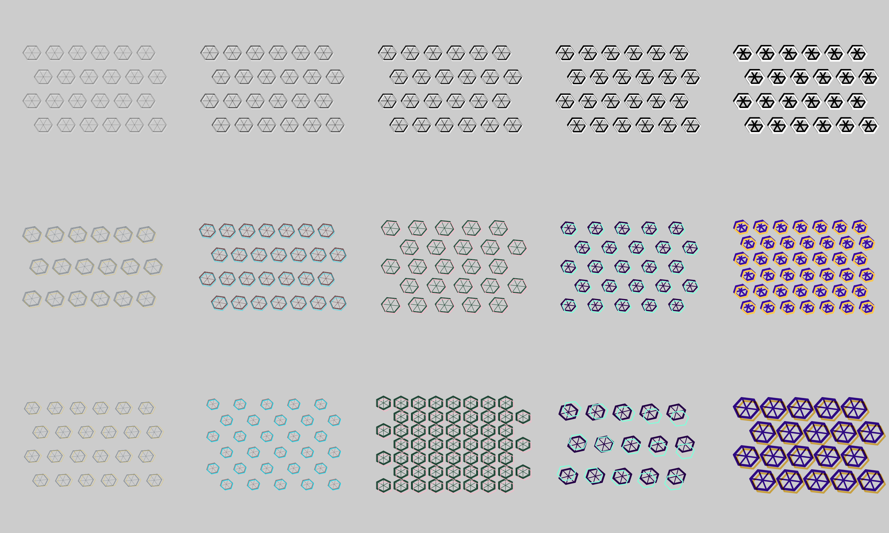
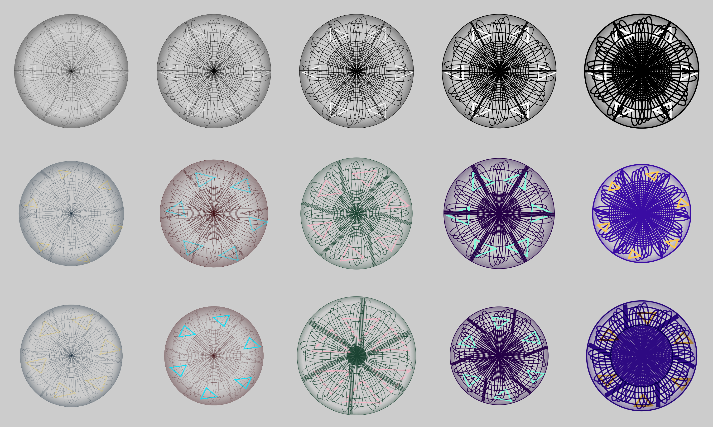
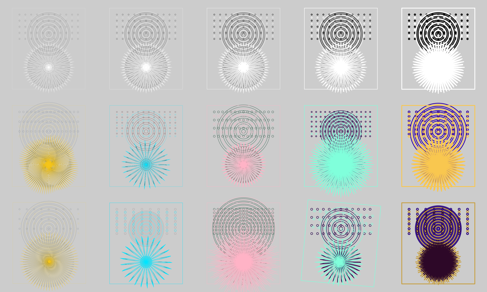

Guilloche Dutch Multi-Motif Stage 5 20260821
Stage-5 Dutch multi-motif guilloche review: the six izzi builders GX1, GX2, GX3, GX4 group 1, GX4 group 2, and GX5 as six 2x 3x5 plates - row 1 black/white reference, row 2 seeded accessible-palette exploration, row 3 registration glitch, asymmetric widths, extreme parameters, relative rotation, and multiply blending - across stroke widths 0.5, 1, 2, 4, and 8. Six grid members; per-cell plates are not generated. Prior rounds: generation-guilloche-20260816-index and generation-guilloche-20260821-dutch-v3-index.
Izzi generation commit: 351d632364534c7c28863681eec4739ec06c3ae9 · 6 passes
-

GX1 stack vignette stage-5 3x5 review plate
The GX1 muted-red stacked vignette with a central elongated oval, interlaced waists, two rosette terminals, and a broad wave lattice. Each 4800x2880 plate runs three rows by five stroke-width columns (0.5, 1, 2, 4, and 8): row 1 is the black and white reference (black only for the single-layer motifs), row 2 is seeded parameter exploration across Midnight Gold, Oxblood Cyan, Forest Blush, Aubergine Mint, and Indigo Sun, and row 3 applies registration glitch, asymmetric layer widths, extreme parameters, relative layer rotation, and multiply blending. Single grid only; per-cell plates are not generated.
-

GX2 stack vignette stage-5 3x5 review plate
The GX2 narrower continuous red panel with two circular terminals, transitional woven sections, and a dominant vertical oval. Each 4800x2880 plate runs three rows by five stroke-width columns (0.5, 1, 2, 4, and 8): row 1 is the black and white reference (black only for the single-layer motifs), row 2 is seeded parameter exploration across Midnight Gold, Oxblood Cyan, Forest Blush, Aubergine Mint, and Indigo Sun, and row 3 applies registration glitch, asymmetric layer widths, extreme parameters, relative layer rotation, and multiply blending. Single grid only; per-cell plates are not generated.
-

GX3 quad medallion stage-5 3x5 review plate
The GX3 four-layer concentric medallion with radial rays, scalloped rings, four vertical satellites, and paired lateral ripple polygons. Each 4800x2880 plate runs three rows by five stroke-width columns (0.5, 1, 2, 4, and 8): row 1 is the black and white reference (black only for the single-layer motifs), row 2 is seeded parameter exploration across Midnight Gold, Oxblood Cyan, Forest Blush, Aubergine Mint, and Indigo Sun, and row 3 applies registration glitch, asymmetric layer widths, extreme parameters, relative layer rotation, and multiply blending. Single grid only; per-cell plates are not generated.
-

GX4 group 1 hexagon field stage-5 3x5 review plate
The GX4 group 1 gray-over-brown field of staggered six-sided medallions. Each 4800x2880 plate runs three rows by five stroke-width columns (0.5, 1, 2, 4, and 8): row 1 is the black and white reference (black only for the single-layer motifs), row 2 is seeded parameter exploration across Midnight Gold, Oxblood Cyan, Forest Blush, Aubergine Mint, and Indigo Sun, and row 3 applies registration glitch, asymmetric layer widths, extreme parameters, relative layer rotation, and multiply blending. Single grid only; per-cell plates are not generated.
-

GX4 group 2 mandala stage-5 3x5 review plate
The GX4 group 2 sixfold gray, dark-red, and white mandala with radial bars, recessed sectors, concentric separators, and a perimeter vignette. Each 4800x2880 plate runs three rows by five stroke-width columns (0.5, 1, 2, 4, and 8): row 1 is the black and white reference (black only for the single-layer motifs), row 2 is seeded parameter exploration across Midnight Gold, Oxblood Cyan, Forest Blush, Aubergine Mint, and Indigo Sun, and row 3 applies registration glitch, asymmetric layer widths, extreme parameters, relative layer rotation, and multiply blending. Single grid only; per-cell plates are not generated.
-

GX5 yellow triptych stage-5 3x5 review plate
The GX5 gray-and-brown bounded triptych combining an upper halftone field, a graded circle, and an overlapping sunflower. Each 4800x2880 plate runs three rows by five stroke-width columns (0.5, 1, 2, 4, and 8): row 1 is the black and white reference (black only for the single-layer motifs), row 2 is seeded parameter exploration across Midnight Gold, Oxblood Cyan, Forest Blush, Aubergine Mint, and Indigo Sun, and row 3 applies registration glitch, asymmetric layer widths, extreme parameters, relative layer rotation, and multiply blending. Single grid only; per-cell plates are not generated.